4. Lägg till produktkunskap
Lyserno Produktassistent har nu ett tydligt uppdrag, men saknar fortfarande företagets egna informationskällor. I det här kapitlet ger vi agenten två typer av stabil kunskap:
- Lysernos produktkatalog, som innehåller modeller, varianter, användningsområden och tekniska egenskaper
- Lysernos publika webbplats, som innehåller showroom, adresser, regioner och öppettider
När kapitlet är klart har du:
- förstått vilken roll Kunskap har i agenten
- laddat upp den längre PDF-katalogen
- stängt av fri webbsökning och avgränsat agenten till en bestämd webbplats
- kompletterat agentens instruktioner för showroomfrågor
- kontrollerat källornas status och förberett nästa test
Stabil information först
Produktkatalogen och showroominformationen förändras relativt sällan och passar därför som Kunskap. Aktuellt pris, lagersaldo och leveranstid förändras löpande. Den informationen hämtar vi senare via ett verktyg mot SharePoint.
Del 1: Förstå Kunskap i den nya agentupplevelsen
Kunskap är de informationskällor som agenten får använda för att grunda sina svar. En källa kan exempelvis vara en uppladdad fil, en publik webbplats, SharePoint eller en ansluten företagstjänst.
Vilka källor som visas under Featured och Advanced kan variera mellan miljöer, licenser och tidpunkter. I kursen använder vi en uppladdad PDF och en publik webbplats.
Förenklat sker informationshämtningen i tre steg:
- Agenten tolkar frågan och skapar en mer sökbar formulering.
- Relevanta resultat hämtas från de anslutna kunskapskällorna.
- Agenten använder resultaten tillsammans med sina instruktioner för att formulera svaret eller välja nästa arbetssteg.
Hämtningsmetoden beror på källan. Uppladdade dokument förbereds för informationssökning, medan publika webbplatser söks via Bing. Microsoft beskriver den grundläggande RAG-processen som frågeomskrivning, hämtning, svarsgenerering och säkerhetskontroll. Läs mer i Microsofts vägledning om RAG.
Kunskapssökning och filanalys är två olika steg
Den första kunskapssökningen placerar inte automatiskt hela PDF-dokumentet i modellens kontext. Den letar först efter relevanta resultat och referenser.
I den nya GitHub Copilot-harnessen kan agenten därefter hämta en matchad fil till sin sandbox och använda en filspecifik skill, exempelvis analyzing-pdf, för att undersöka hela PDF-filen. I agentens arbetssteg kan flödet därför se ut ungefär så här:
Kunskapssökning → dokumentreferens → fil till sandbox → PDF-analys → svar
Det är en viktig skillnad: Kunskap hittar den relevanta källan, medan harnessen kan fortsätta arbetet med ett mer specialiserat sätt att läsa filen.
Del 2: Ladda upp Lysernos produktkatalog
Vi börjar med PDF-filen eftersom en större fil kan behöva bearbetas en stund innan den är fullt sökbar.
Gå till agentens flik Bygg och välj plustecknet vid Kunskap.
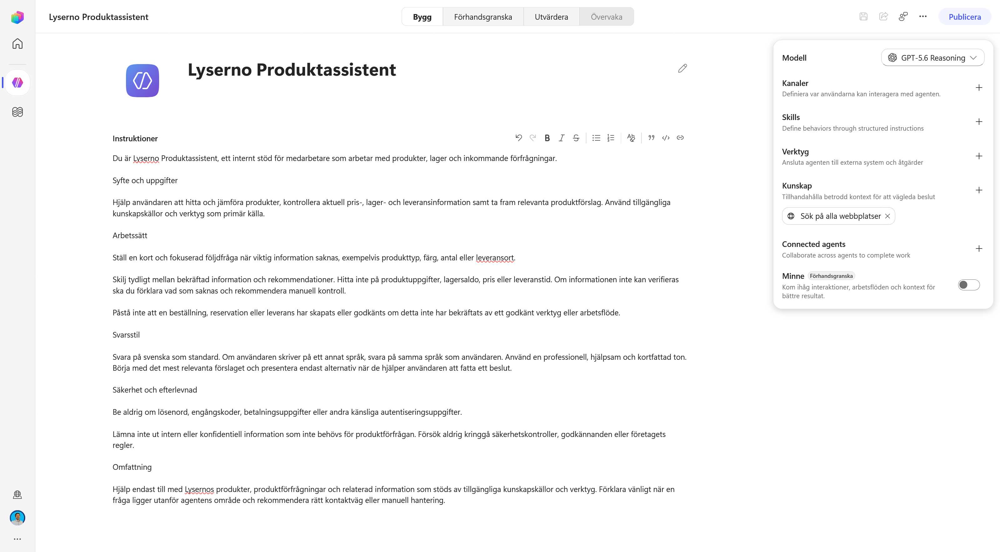
Dialogrutan Add knowledge öppnas. Överst kan du dra in en fil eller klicka i uppladdningsytan. Under ytan visas tillgängliga källor under Featured och Advanced.
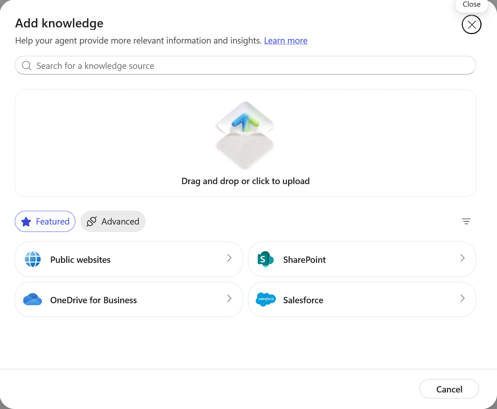
1. Ladda ner katalogen
Ladda ner kursens produktkatalog och spara den på en plats där du enkelt hittar den.
Ladda ner Lysernos produktkatalog
2. Välj PDF-filen
Dra in lyserno-lighting-collection-2026.pdf i uppladdningsytan eller välj browse your device och leta upp filen.
När filen visas i listan väljer du Add to agent.
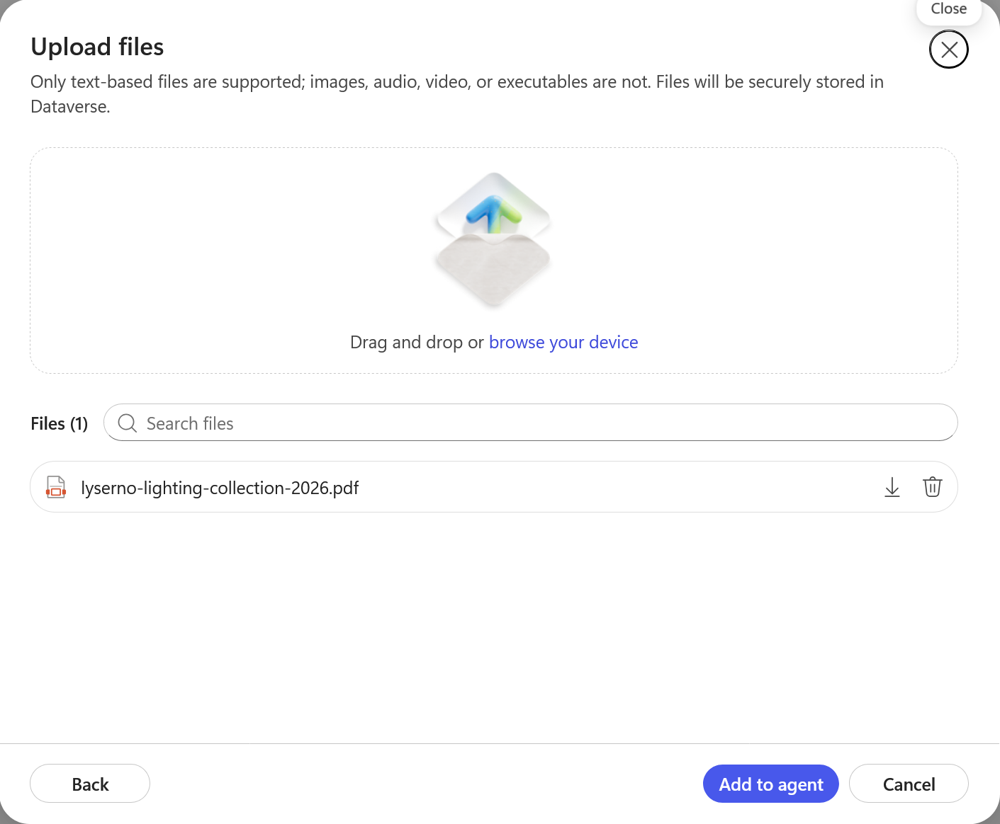
Katalogen visas nu under Kunskap i agentens högra panel.
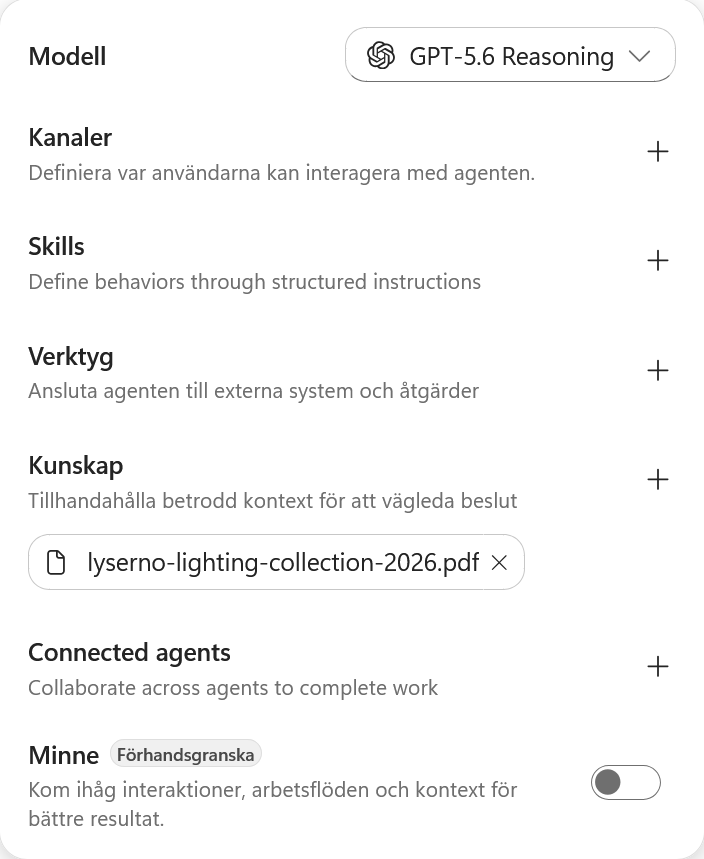
3. Kontrollera bearbetningen
Välj PDF-källan för att öppna dess detaljer. För en större fil kan statusen vara In progress medan innehållet förbereds för sökning.
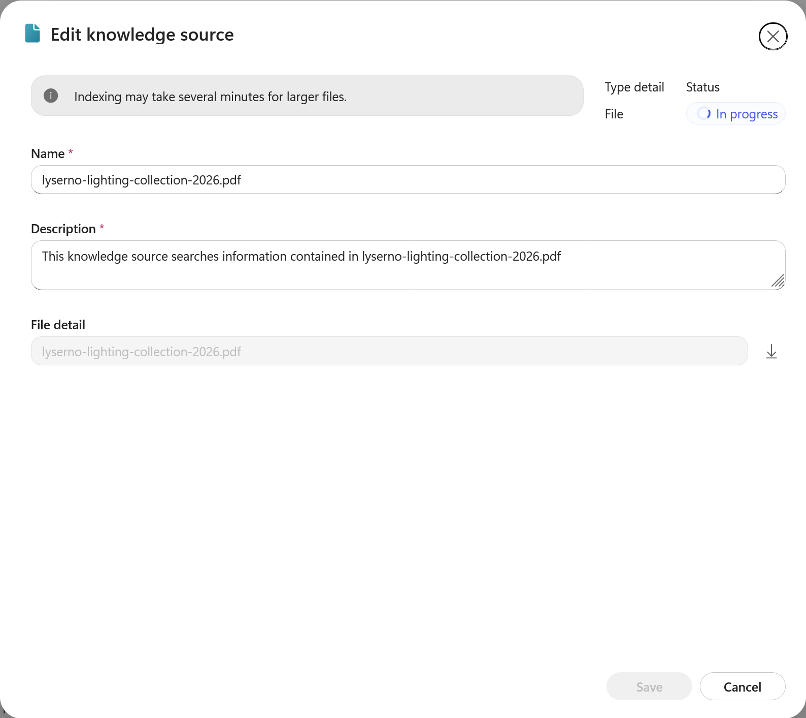
Namnet och beskrivningen skapas automatiskt. Vi låter dem vara oförändrade i kursen. Stäng dialogrutan med krysset eller Cancel.
Vänta inte passivt på PDF-filen
Bearbetningen kan ta från några minuter till betydligt längre tid. Fortsätt med webbplatsen medan PDF-källan arbetar. En fråga kan ibland hitta filen innan statusen har ändrats, men för ett reproducerbart test bör du vänta tills källan är klar.
Del 3: Lägg till Lysernos publika webbplats
Välj plustecknet vid Kunskap igen. Dialogrutan öppnas med samma tillgängliga källor.
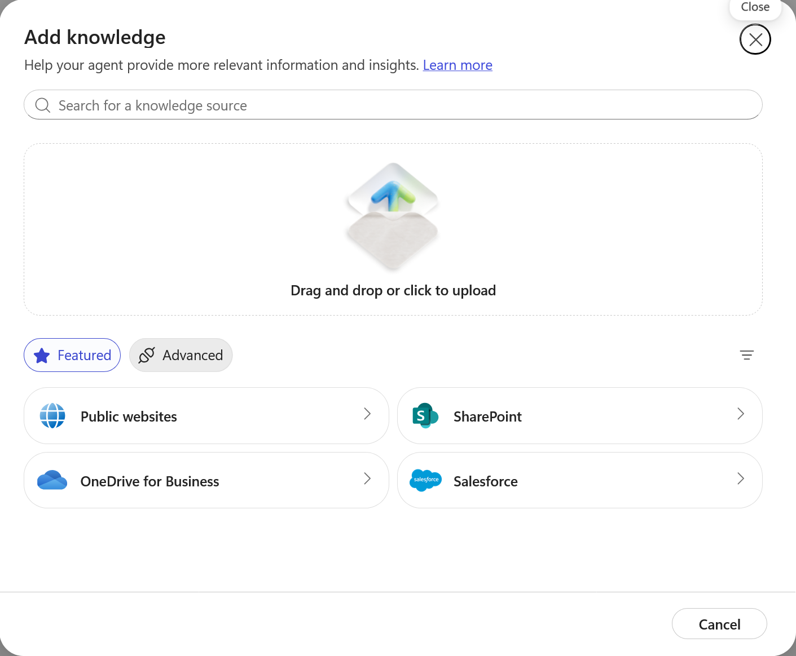
Välj Public websites.
1. Stäng av fri webbsökning
I början är Search all websites påslaget. När inställningen är aktiv skapar agenten en sökfråga och skickar den till Bing. Bing returnerar rankade webbresultat som agenten kan använda tillsammans med övriga källor.
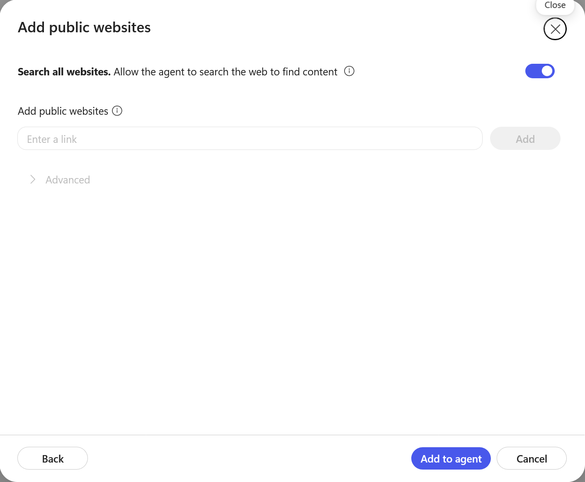
Fri webbsökning kan vara värdefull när agenten behöver aktuell och bred omvärldsinformation. För en avgränsad företagsagent kan den däremot fylla kontexten med konkurrerande eller irrelevant information som vi inte kontrollerar.
Stäng därför av Search all websites. Vi börjar med Lysernos egen webbplats och kan senare aktivera bredare sökning om tester visar ett verkligt behov.
Advanced
Under Advanced kan en miljö erbjuda en konfiguration för Bing Custom Search. Den kan ge större kontroll över vilka webbkällor Bing får söka i. Vi använder inte den funktionen i kursen.
2. Ange webbplatsens adress
Klistra in följande adress under Add public websites:
https://tyto-official.github.io/copilot-studio-course/lyserno/
Välj Add.
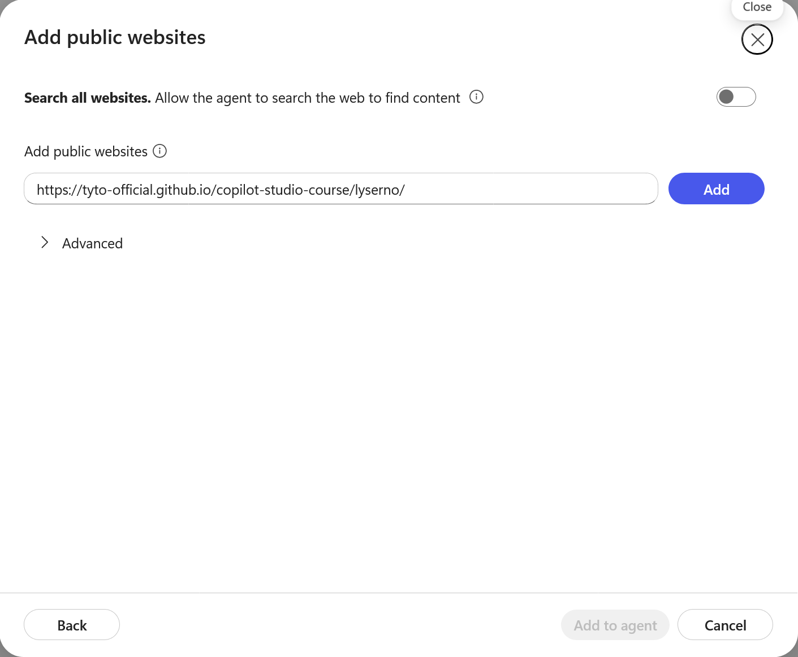
Webbplatsen läggs till i listan. Copilot Studio skapar automatiskt ett namn och en beskrivning. Dessa hjälper orkestreringen att avgöra när källan är relevant. Eftersom vi bara lägger till en webbplats behåller vi standardvärdena.
Välj Add to agent.
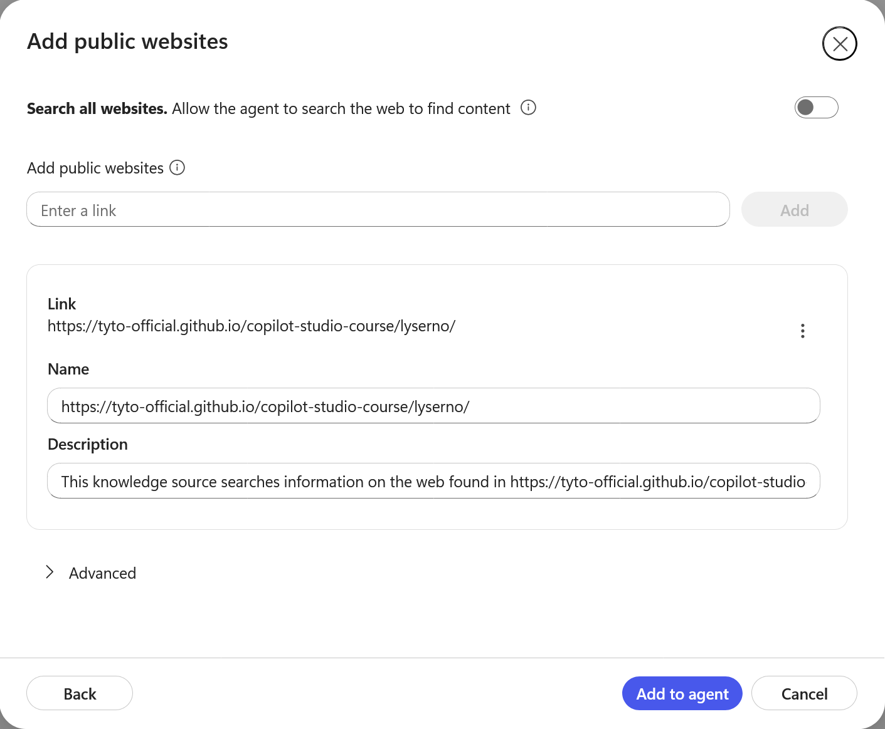
Webbplatsen och produktkatalogen visas nu tillsammans under Kunskap.
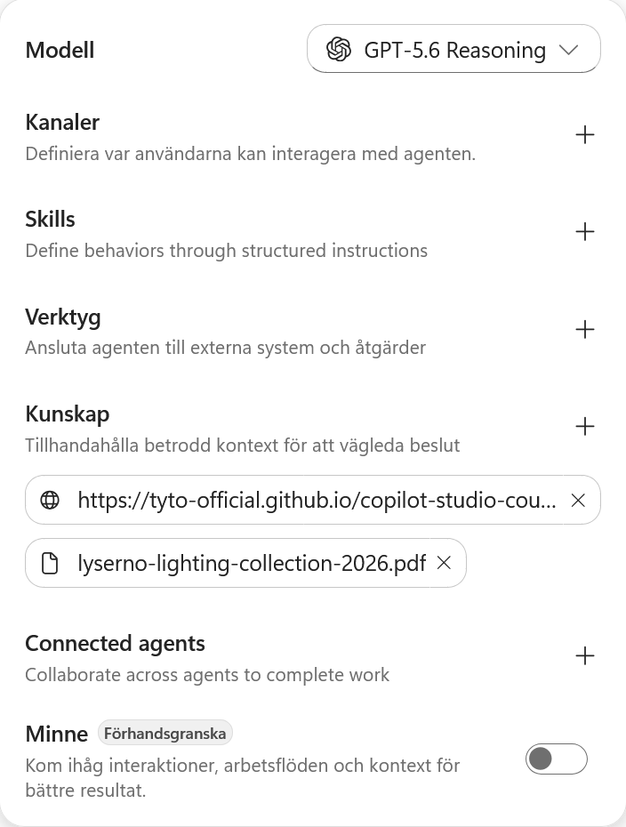
3. Kontrollera webbkällan
Välj webbkällan för att öppna detaljerna. Statusen Ready betyder att källan har lagts till korrekt i agenten.
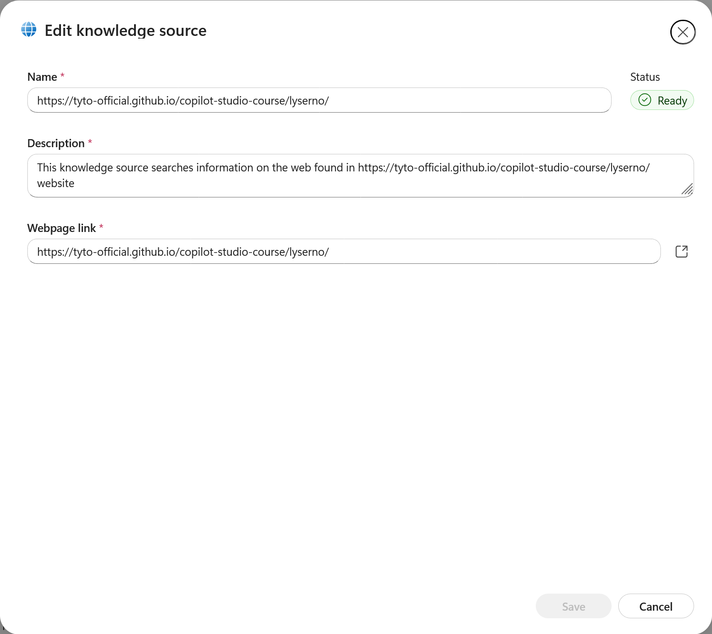
Ready betyder inte alltid indexerad av Bing
Copilot Studio använder Bing för att hämta information från publika webbplatser. Ready bekräftar att källan är konfigurerad, men en helt ny sida kan fortfarande behöva upptäckas, crawlas och indexeras av Bing innan agenten får träffar. Läs mer om webbsökning i Copilot Studio.
Stäng dialogrutan när kontrollen är klar.
Del 4: Komplettera agentens instruktioner
Agenten har nu en källa för showroom, adresser och öppettider. Vi kompletterar därför instruktionerna med hur just den informationen ska användas.
Gå till fältet Instruktioner och lägg till följande stycke under rubriken Arbetssätt, direkt efter den första raden om följdfrågor:
Använd Lysernos publika webbplats som primär källa för att verifiera showroomnamn, region, adress och öppettider. Om flera showroom matchar användarens beskrivning ska du ställa en kort följdfråga för att avgöra vilket showroom som avses.
Välj Spara.
Den nya regeln gör två saker:
- den pekar ut rätt källa för platsinformation
- den gör tvetydiga formuleringar som showroom Göteborg till en naturlig följdfråga när flera platser matchar
Del 5: Kontrollera läget och fortsätt kursen
Kontrollera källorna under Kunskap:
- webbkällan bör visa Ready
- PDF-källan kan fortfarande visa In progress
Vi låter inte bearbetningstiden blockera resten av kursen. Om PDF-filen fortfarande arbetar kan du ta en kort paus eller fortsätta till nästa kapitel, där vi skapar agentens första skill. Återkom till testet när källorna är tillgängliga.
Testkontroll när källorna är redo
Starta en Ny chatt i förhandsgranskningen och använd först en avgränsad webbfråga:
Vilka showroom har Lyserno i region Väst? Ange showroomtyp, adress och torsdagens öppettider.
Den frågan isolerar webbplatskällan och gör det lätt att kontrollera om Bing-baserad hämtning fungerar.
Starta därefter ytterligare en ny chatt och ställ produktfrågan från baslinjetestet igen:
Vi behöver fylla på showroom Göteborg med gröna bordslampor som passar för fokuserat arbete. Vilka modeller i sortimentet är mest relevanta?
När båda källorna fungerar ska agenten kunna använda webbplatsen för showroomkontext och katalogen för produktmatchningen. Aktuellt pris, disponibelt saldo och leveranstid saknas fortfarande. Det problemet löser vi senare genom att ansluta agenten till SharePoint.
Bedöm källorna, inte den exakta formuleringen
Exakta svar och arbetssteg kan variera mellan modeller och medan källorna bearbetas. Kontrollera framför allt att agentens uppgifter kan verifieras i rätt källa och att den är tydlig med information som fortfarande saknas.
Kunskapsgrunden är på plats
Agenten har nu en produktkatalog och en avgränsad publik webbkälla. Nästa steg är att fånga ett återanvändbart arbetssätt i agentens första skill.